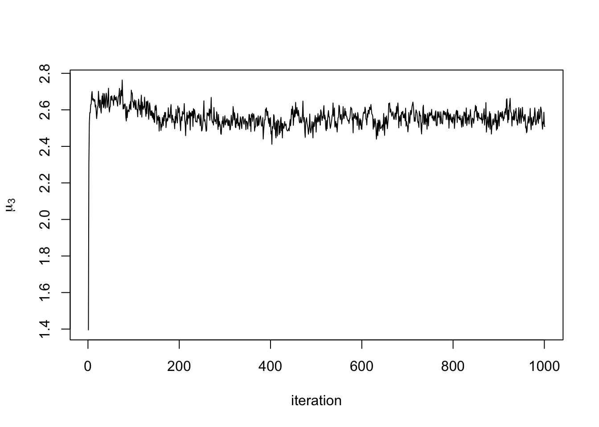

Last updated: 2024-10-30
Checks: 6 1
Knit directory: climb-jin/
This reproducible R Markdown analysis was created with workflowr (version 1.7.1). The Checks tab describes the reproducibility checks that were applied when the results were created. The Past versions tab lists the development history.
The R Markdown file has unstaged changes. To know which version of
the R Markdown file created these results, you’ll want to first commit
it to the Git repo. If you’re still working on the analysis, you can
ignore this warning. When you’re finished, you can run
wflow_publish to commit the R Markdown file and build the
HTML.
Great job! The global environment was empty. Objects defined in the global environment can affect the analysis in your R Markdown file in unknown ways. For reproduciblity it’s best to always run the code in an empty environment.
The command set.seed(20241028) was run prior to running
the code in the R Markdown file. Setting a seed ensures that any results
that rely on randomness, e.g. subsampling or permutations, are
reproducible.
Great job! Recording the operating system, R version, and package versions is critical for reproducibility.
Nice! There were no cached chunks for this analysis, so you can be confident that you successfully produced the results during this run.
Great job! Using relative paths to the files within your workflowr project makes it easier to run your code on other machines.
Great! You are using Git for version control. Tracking code development and connecting the code version to the results is critical for reproducibility.
The results in this page were generated with repository version 7952a1e. See the Past versions tab to see a history of the changes made to the R Markdown and HTML files.
Note that you need to be careful to ensure that all relevant files for
the analysis have been committed to Git prior to generating the results
(you can use wflow_publish or
wflow_git_commit). workflowr only checks the R Markdown
file, but you know if there are other scripts or data files that it
depends on. Below is the status of the Git repository when the results
were generated:
Ignored files:
Ignored: .Trash/
Ignored: .android/
Ignored: Desktop/climb-jin/.DS_Store
Ignored: Desktop/climb-jin/analysis/.DS_Store
Ignored: Desktop/climb-jin/analysis/pairwise_fitting_cache/
Ignored: env_name/
Ignored: lemon-x.y.z/
Untracked files:
Untracked: .CFUserTextEncoding
Untracked: .DS_Store
Untracked: .RData
Untracked: .RDataTmp
Untracked: .Rapp.history
Untracked: .Rhistory
Untracked: .Xauthority
Untracked: .anaconda/
Untracked: .anyconnect
Untracked: .bash_history
Untracked: .bash_profile
Untracked: .bash_profile.bak
Untracked: .bash_sessions/
Untracked: .cache/
Untracked: .cisco/
Untracked: .conda/
Untracked: .condarc
Untracked: .config/
Untracked: .continuum/
Untracked: .cups/
Untracked: .dropbox/
Untracked: .eclipse/
Untracked: .gitconfig
Untracked: .ipynb_checkpoints/
Untracked: .ipython/
Untracked: .julia/
Untracked: .juliaup/
Untracked: .jupyter/
Untracked: .local/
Untracked: .matplotlib/
Untracked: .oracle_jre_usage/
Untracked: .p2/
Untracked: .r/
Untracked: .snipaste/
Untracked: .subversion/
Untracked: .tcshrc
Untracked: .tooling/
Untracked: .virtualenvs/
Untracked: .vscode/
Untracked: .wns/
Untracked: .xonshrc
Untracked: .zsh_history
Untracked: .zsh_sessions/
Untracked: .zshrc
Untracked: 511hw3.Rmd
Untracked: =0.29.21
Untracked: =0.4.0
Untracked: Applications/
Untracked: CLIMB.zip
Untracked: Calibre Library/
Untracked: Creative Cloud Files Personal Account lydia0425@hotmail.com 3BE21D79656B7BC80A495F8C@AdobeID/
Untracked: Creative Cloud Files lydiajin@colostate.edu 5a37fd827490aa859a1a523ab35d0252fdf8d2d8259bfef57b7d4de857d68da6/
Untracked: Desktop/.DS_Store
Untracked: Desktop/319.pdf
Untracked: Desktop/517/
Untracked: Desktop/555/
Untracked: Desktop/7788/
Untracked: Desktop/CLIMB/
Untracked: Desktop/File/
Untracked: Desktop/Screenshot 2024-10-25 at 09.41.56.png
Untracked: Desktop/Screenshot 2024-10-25 at 09.43.11.png
Untracked: Desktop/Screenshot 2024-10-25 at 09.43.48.png
Untracked: Desktop/Screenshot 2024-10-29 at 10.47.50.png
Untracked: Desktop/climb-jin/.Rprofile
Untracked: Desktop/climb-jin/.gitattributes
Untracked: Desktop/climb-jin/.gitignore
Untracked: Desktop/climb-jin/README.md
Untracked: Desktop/climb-jin/_workflowr.yml
Untracked: Desktop/climb-jin/analysis/about.Rmd
Untracked: Desktop/climb-jin/analysis/candidate_latent_classes.Rmd
Untracked: Desktop/climb-jin/analysis/downstream.Rmd
Untracked: Desktop/climb-jin/analysis/license.Rmd
Untracked: Desktop/climb-jin/climb-jin.Rproj
Untracked: Desktop/climb-jin/code/
Untracked: Desktop/climb-jin/data/
Untracked: Desktop/climb-jin/output/
Untracked: Desktop/climb-jin/pwfits.Rdata
Untracked: Desktop/climb-page/
Untracked: Desktop/reading/
Untracked: Documents
Untracked: Downloads
Untracked: Dropbox/
Untracked: HW5code.Rmd
Untracked: HW5code.pdf
Untracked: HW6-code.Rmd
Untracked: HW6-code.pdf
Untracked: IdeaProjects/
Untracked: Library/
Untracked: MATLAB-Drive/
Untracked: Manifest.toml
Untracked: Movies/
Untracked: Music/
Untracked: Pictures/
Untracked: Project.toml
Untracked: Public/
Untracked: PycharmProjects/
Untracked: Sigma_chain_py.jld
Untracked: Sigma_chain_test.jld
Untracked: Sigma_chains_
Untracked: Sigma_chains_1
Untracked: Sigma_chains_1.csv
Untracked: Sigma_chains_10
Untracked: Sigma_chains_10.csv
Untracked: Sigma_chains_11
Untracked: Sigma_chains_11.csv
Untracked: Sigma_chains_12
Untracked: Sigma_chains_12.csv
Untracked: Sigma_chains_13
Untracked: Sigma_chains_13.csv
Untracked: Sigma_chains_2
Untracked: Sigma_chains_2.csv
Untracked: Sigma_chains_21.txt
Untracked: Sigma_chains_3
Untracked: Sigma_chains_3.csv
Untracked: Sigma_chains_4
Untracked: Sigma_chains_4.csv
Untracked: Sigma_chains_423.txt
Untracked: Sigma_chains_5
Untracked: Sigma_chains_5.csv
Untracked: Sigma_chains_6
Untracked: Sigma_chains_6.csv
Untracked: Sigma_chains_7
Untracked: Sigma_chains_7.csv
Untracked: Sigma_chains_8
Untracked: Sigma_chains_8.csv
Untracked: Sigma_chains_9
Untracked: Sigma_chains_9.csv
Untracked: Sigma_chains_reshaped.txt
Untracked: Sigma_mvn_test.csv
Untracked: Sigma_star.csv
Untracked: Sigma_star_test.csv
Untracked: Sigma_star_test_logl.csv
Untracked: Sigma_test.csv
Untracked: Sites/
Untracked: Untitld.Rmd
Untracked: Untitld.docx
Untracked: Untitled.Rmd
Untracked: Untitled.log
Untracked: Untitled.tex
Untracked: XFeat_training_example.ipynb
Untracked: accelerated_features/
Untracked: acpt_rate_chain.txt
Untracked: anaconda3/
Untracked: cgibbs.ipynb
Untracked: chain.csv
Untracked: chain_test.jld
Untracked: climb-page/
Untracked: constrained_distributions.ipynb
Untracked: consulting.Rmd
Untracked: curr_Sigmas_test.csv
Untracked: eclipse-workspace/
Untracked: eclipse/
Untracked: h_mvn_test.csv
Untracked: helpers.ipynb
Untracked: hyp.RData
Untracked: hyp.csv
Untracked: hyp.rds
Untracked: hyp_Psi0.RData
Untracked: hyp_alpha.RData
Untracked: hyp_kappa0.RData
Untracked: hyp_mu0.RData
Untracked: iCloud Drive (Archive)/
Untracked: image-matching-webui/
Untracked: julia/
Untracked: labels.RData
Untracked: labels_test.csv
Untracked: lgf.txt
Untracked: lgf1.txt
Untracked: lgf2.txt
Untracked: lgf_human.txt
Untracked: lgf_human1.txt
Untracked: lgf_human2.txt
Untracked: ll_mult_curr.csv
Untracked: ll_mult_star.csv
Untracked: matlab_crash_dump.14732-1
Untracked: matlab_crash_dump.17960-1
Untracked: matlab_crash_dump.33550-1
Untracked: matlab_crash_dump.411-1
Untracked: miniconda3/
Untracked: minimal_example.ipynb
Untracked: mosta.ipynb
Untracked: mu0_mvn_test.csv
Untracked: mu0_test.csv
Untracked: mu_chain_py.jld
Untracked: mu_chain_test.csv
Untracked: mu_chain_test.jld
Untracked: mu_chains.csv
Untracked: mu_chains.txt
Untracked: mu_chains_1.csv
Untracked: mu_chains_10.csv
Untracked: mu_chains_11.csv
Untracked: mu_chains_12.csv
Untracked: mu_chains_13.csv
Untracked: mu_chains_2.csv
Untracked: mu_chains_3.csv
Untracked: mu_chains_3.txt
Untracked: mu_chains_4.csv
Untracked: mu_chains_5.csv
Untracked: mu_chains_6.csv
Untracked: mu_chains_7.csv
Untracked: mu_chains_8.csv
Untracked: mu_chains_9.csv
Untracked: mu_chains_reshaped.txt
Untracked: mu_hats_test.csv
Untracked: occ.csv
Untracked: opt/
Untracked: out.csv
Untracked: plotters.ipynb
Untracked: prob_curr.csv
Untracked: prob_star.csv
Untracked: processors.ipynb
Untracked: prop_chain
Untracked: prop_chain.csv
Untracked: prop_chain.txt
Untracked: prop_chain_py.csv
Untracked: pwfits.Rdata
Untracked: retained_classes.RData
Untracked: run_mcmc.ipynb
Untracked: run_mcmc_pre.ipynb
Untracked: running_mcmc-Copy1.ipynb
Untracked: running_mcmc.ipynb
Untracked: running_mcmc_Aug6.ipynb
Untracked: running_mcmc_Sep2-Copy1.ipynb
Untracked: running_mcmc_Sep2.ipynb
Untracked: sim.RData
Untracked: simdat.RData
Untracked: xfeat+lg_torch_hub.ipynb
Untracked: xfeat_matching.ipynb
Untracked: xfeat_torch_hub.ipynb
Untracked: z_chain
Untracked: z_chain.csv
Untracked: z_chain.txt
Untracked: z_chain_py.csv
Untracked: z_test
Untracked: z_test.csv
Untracked: z_test_logl.csv
Untracked: zout_test.csv
Unstaged changes:
Modified: Desktop/climb-jin/analysis/running_mcmc.Rmd
Note that any generated files, e.g. HTML, png, CSS, etc., are not included in this status report because it is ok for generated content to have uncommitted changes.
These are the previous versions of the repository in which changes were
made to the R Markdown
(Desktop/climb-jin/analysis/running_mcmc.Rmd) and HTML
(Desktop/climb-jin/docs/running_mcmc.html) files. If you’ve
configured a remote Git repository (see ?wflow_git_remote),
click on the hyperlinks in the table below to view the files as they
were in that past version.
| File | Version | Author | Date | Message |
|---|---|---|---|---|
| html | 7952a1e | Jin Peng | 2024-10-30 | Build site. |
| Rmd | 8ca57b5 | Jin Peng | 2024-10-30 | Add analysis |
The final step of CLIMB involves doing inference on the parsimonious Gaussian mixture using MCMC. MCMC is an iterative method, and thus the user needs to specify how many iterations to use. We recommend running a quick pilot analysis–say, for 10 iterations. This pilot analysis will give a good idea of how long an analysis will need to run for a given larger number of iterations (say, 20,000 iterations).
You can run an MCMC through a script running_mcmc.ipynb written in Python. The user needs to provide 4 arguments:
dat: the input data you’ve been using throughout the
analysis
hyp: the hyperparameter values estimated in the
previous step
nstep: number of MCMC iterations to run
retained_classes: the parsimonious list of candidate
latent classes, after finally filtering out by prior weights as done in
the previous step
Before running an MCMC in python, we prepare the data by saving the toy data and each hyperparameter into one Rdata file to be readable in Python:
save(sim$data, file = "output/sim.Rdata")
save(hyp$Psi0, file = "output/hyp_Psi0.Rdata")
save(hyp$mu0, file = "output/hyp_mu0.Rdata")
save(hyp$alpha, file = "output/hyp_alpha.Rdata")
save(hyp$kappa0, file = "output/hyp_kappa0.Rdata")Next, we run CLIMB Python scripts and import modules in Python:
%run cgibbs.ipynb
import pyreadr
import pandas as pd
import numpy as npThen, we load in our data, list of candidate latent classes, and estimated hyperparameters in Python:
sim = pyreadr.read_r('output/sim.RData')
Psi0 = pyreadr.read_r('output/hyp_Psi0.RData')
mu0 = pyreadr.read_r('output/hyp_mu0.RData')
alpha = pyreadr.read_r('output/hyp_alpha.RData')
kappa0 = pyreadr.read_r('output/hyp_kappa0.RData')
retained_classes = pd.read_csv("output/retained_classes.txt", sep="\t", header=None)Next, assign MCMC parameters and setup iterations in Python:
Psi0 = Psi0['Psi0'].values
mu0 = mu0['mu0'].values
alpha = alpha['alpha'].values.T[0]
kappa0 = kappa0['kappa0'].values.T[0]
dat = sim['sim.dat']
dm = dat.shape[1]
n = dat.shape[0]
nm = len(alpha)
nw = 1
alph = alpha
hyp = [kappa0, mu0, Psi0]
reduced_classes = retained_classes
nstep = 1000
tune_df = np.repeat(1000., nm)
reduced_classes = retained_classes
param = []
for i in range(nw) :
dict_list = []
for m in range(nm) :
dictionary = {"mu":[],"Sigma":[]}
Sigma = np.array(np.matrix(Psi0[:,:,m]).getH())
mu = mu0[m]
dictionary['mu']= mu
dictionary['Sigma']= Sigma
dict_list.append(dictionary)
z = np.random.choice(np.arange(1, nm+1), size=n, p=p, replace=True)
chain_i = [dict_list, alph, z]
param.append(chain_i)
labels = np.apply_along_axis(lambda x: ''.join(map(str, x + 1)), axis=1, arr=retained_classes)Now we are ready to launch an MCMC in Python:
chain, acpt_rate_chain, tune_df_chain = run_mcmc(dat, param, hyp, alpha, nstep, labels, tune_df, opt_rate=0.3)The MCMC results from Python contain 3 objects:
chain: the estimate parameters over the course of
nstep iterations
acceptane_rate_chain: an \(M\times\)nstep matrix of the
acceptance rates for each cluster covariance. The proposals for each
cluster are adaptively tuned such that the acceptance rates converge to
about 0.3
tune_df_chain: the tuning degrees of freedom across
the chain, adjusted to yield optimal acceptance rates
We further extract the chain and save the output. First, recall that
M is the number of input classes, D is the
dimension of the data, and let iterations be
nstep+1.
# mu_chains output
mu_chains = []
for i in range(nm):
mu_chains_i = []
for j in range(nstep+1):
mu_chains_i.append(result_chain[j][0][0][i]['mu'].tolist())
mu_chains.append(mu_chains_i)
mu_chains_reshaped = np.array(mu_chains).reshape(np.array(mu_chains).shape[0], -1)
np.savetxt('mu_chains_reshaped.txt', mu_chains_reshaped)# Sigma_chains output
Sigma_chains = []
for i in range(nm):
Sigma_chains_i = []
for j in range(nstep+1):
Sigma_chains_i.append(result_chain[j][0][0][i]['Sigma'].tolist())
Sigma_chains.append(Sigma_chains_i)
Sigma_chains_reshaped = np.array(Sigma_chains).reshape(np.array(Sigma_chains).shape[0], -1)
np.savetxt('Sigma_chains_reshaped.txt', Sigma_chains_reshaped)# prop_chain output
prop_chain = []
for j in range(nstep+1):
prop_chain.append(result_chain[j][0][1])
np.savetxt('prop_chain.txt', prop_chain)# z_chain output
z_chain = []
for j in range(nstep+1):
z_chain.append(result_chain[j][0][2])
np.savetxt('z_chain.txt', z_chain)The output contains:
mu_chains: a list with M elements, each
element a matrix of dimension iterations x D.
mu_chains[[i]] is the MCMC samples for the mean vector of
cluster i.
Sigma_chains: a list with M elements,
each element an array of dimension D x D x iterations.
Sigma_chains[[i]] is the MCMC samples for the covariance
matrix of cluster i.
prop_chain: A matrix of dimension
M x iterations, containing the MCMC samples for the mixing
proportions of each class.
z_chain: A matrix of dimension
n x iterations, containing the MCMC samples for the class
labels of each observation. These labels correspond to the row indices
of retained_classes (above).
Finally, we load in the extracted data in R and save them into a list chain after reshaping.
# adjust mu_chains
mu_chain_py_reshaped <- read.table("mu_chains_reshaped.txt", quote="\"", comment.char="")
mu_chain_py_reshaped <- as.matrix(mu_chain_py_reshaped)
nstep = 1000
mu_chains <- list()
for (i in 1:length(mu_chain_py_reshaped[,1])){
mu_chains[[i]] <- array(mu_chain_py_reshaped[i,], dim = c(nstep+1,length(mu_chain_py_reshaped[1,])/(nstep+1)))
}
# adjust Sigma_chains
Sigma_chains_reshaped <- read.table("Sigma_chains_reshaped.txt", quote="\"", comment.char="")
Sigma_chains_reshaped <- as.matrix(Sigma_chains_reshaped)
Sigma_chains <- list()
for (i in 1:length(Sigma_chain_py_reshaped[,1])){
Sigma_chains[[i]] <- array(Sigma_chain_py_reshaped[i,], dim = c(3,3,1001))
}
# adjust prop_chain
prop_chain <- read.table("prop_chain.txt", quote="\"", comment.char="", header = FALSE)
prop_chain <- as.matrix(prop_chain)
colnames(prop_chain) <- NULL
# adjust z_chain
z_chain <- read.table("z_chain.txt", quote="\"", comment.char="", header = FALSE)
z_chain <- as.matrix(z_chain)
z_chain <- t(z_chain)
colnames(z_chain) <- NULL
# create a list
chain <- list()
chain$mu_chains <- mu_chains
chain$Sigma_chains <- Sigma_chains
chain$prop_chain <- prop_chain
chain$z_chain <- z_chain
# save chain
if(!file.exists("output/chain.rds")) {
saveRDS(chain, file = "output/chain.rds")
}The Python results will contain all the different chains from the MCMC. To extract the data for R’s use, for example, you can check the MCMC trace plots. Here is the trace plot of the mean from the first cluster in the third dimension:
plot(chain$mu_chains[[1]][,3], type = "l", xlab = "iteration", ylab = expression(mu[3]))
| Version | Author | Date |
|---|---|---|
| 7952a1e | Jin Peng | 2024-10-30 |
print(sessionInfo())R version 4.3.2 (2023-10-31)
Platform: x86_64-apple-darwin20 (64-bit)
Running under: macOS Sonoma 14.5
Matrix products: default
BLAS: /Library/Frameworks/R.framework/Versions/4.3-x86_64/Resources/lib/libRblas.0.dylib
LAPACK: /Library/Frameworks/R.framework/Versions/4.3-x86_64/Resources/lib/libRlapack.dylib; LAPACK version 3.11.0
locale:
[1] en_US.UTF-8/en_US.UTF-8/en_US.UTF-8/C/en_US.UTF-8/en_US.UTF-8
time zone: America/New_York
tzcode source: internal
attached base packages:
[1] stats graphics grDevices utils datasets methods base
other attached packages:
[1] rhdf5_2.46.1 magrittr_2.0.3 workflowr_1.7.1
loaded via a namespace (and not attached):
[1] jsonlite_1.8.8 highr_0.10 compiler_4.3.2
[4] promises_1.2.1 Rcpp_1.0.12 stringr_1.5.1
[7] git2r_0.33.0 rhdf5filters_1.14.1 callr_3.7.5
[10] later_1.3.2 jquerylib_0.1.4 yaml_2.3.8
[13] fastmap_1.1.1 R6_2.5.1 knitr_1.45
[16] tibble_3.2.1 rprojroot_2.0.4 bslib_0.6.1
[19] pillar_1.9.0 rlang_1.1.3 utf8_1.2.4
[22] cachem_1.0.8 stringi_1.8.3 httpuv_1.6.14
[25] xfun_0.42 getPass_0.2-4 fs_1.6.3
[28] sass_0.4.8 cli_3.6.2 Rhdf5lib_1.24.2
[31] ps_1.7.6 digest_0.6.34 processx_3.8.3
[34] rstudioapi_0.15.0 lifecycle_1.0.4 vctrs_0.6.5
[37] evaluate_0.23 glue_1.7.0 whisker_0.4.1
[40] fansi_1.0.6 rmarkdown_2.25 httr_1.4.7
[43] tools_4.3.2 pkgconfig_2.0.3 htmltools_0.5.7
sessionInfo()R version 4.3.2 (2023-10-31)
Platform: x86_64-apple-darwin20 (64-bit)
Running under: macOS Sonoma 14.5
Matrix products: default
BLAS: /Library/Frameworks/R.framework/Versions/4.3-x86_64/Resources/lib/libRblas.0.dylib
LAPACK: /Library/Frameworks/R.framework/Versions/4.3-x86_64/Resources/lib/libRlapack.dylib; LAPACK version 3.11.0
locale:
[1] en_US.UTF-8/en_US.UTF-8/en_US.UTF-8/C/en_US.UTF-8/en_US.UTF-8
time zone: America/New_York
tzcode source: internal
attached base packages:
[1] stats graphics grDevices utils datasets methods base
other attached packages:
[1] rhdf5_2.46.1 magrittr_2.0.3 workflowr_1.7.1
loaded via a namespace (and not attached):
[1] jsonlite_1.8.8 highr_0.10 compiler_4.3.2
[4] promises_1.2.1 Rcpp_1.0.12 stringr_1.5.1
[7] git2r_0.33.0 rhdf5filters_1.14.1 callr_3.7.5
[10] later_1.3.2 jquerylib_0.1.4 yaml_2.3.8
[13] fastmap_1.1.1 R6_2.5.1 knitr_1.45
[16] tibble_3.2.1 rprojroot_2.0.4 bslib_0.6.1
[19] pillar_1.9.0 rlang_1.1.3 utf8_1.2.4
[22] cachem_1.0.8 stringi_1.8.3 httpuv_1.6.14
[25] xfun_0.42 getPass_0.2-4 fs_1.6.3
[28] sass_0.4.8 cli_3.6.2 Rhdf5lib_1.24.2
[31] ps_1.7.6 digest_0.6.34 processx_3.8.3
[34] rstudioapi_0.15.0 lifecycle_1.0.4 vctrs_0.6.5
[37] evaluate_0.23 glue_1.7.0 whisker_0.4.1
[40] fansi_1.0.6 rmarkdown_2.25 httr_1.4.7
[43] tools_4.3.2 pkgconfig_2.0.3 htmltools_0.5.7